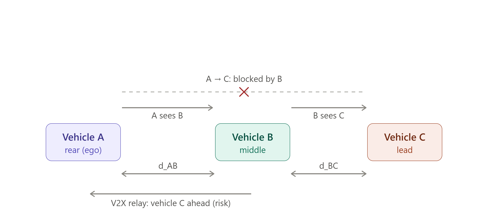
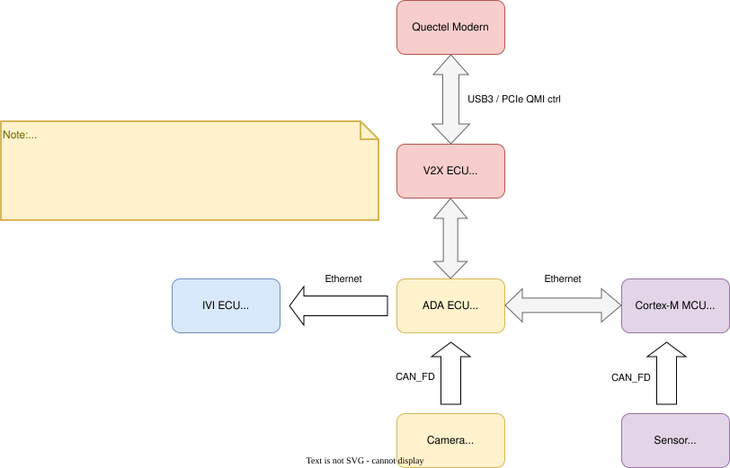
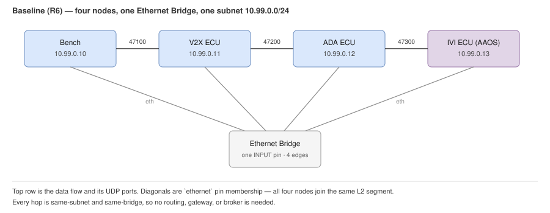
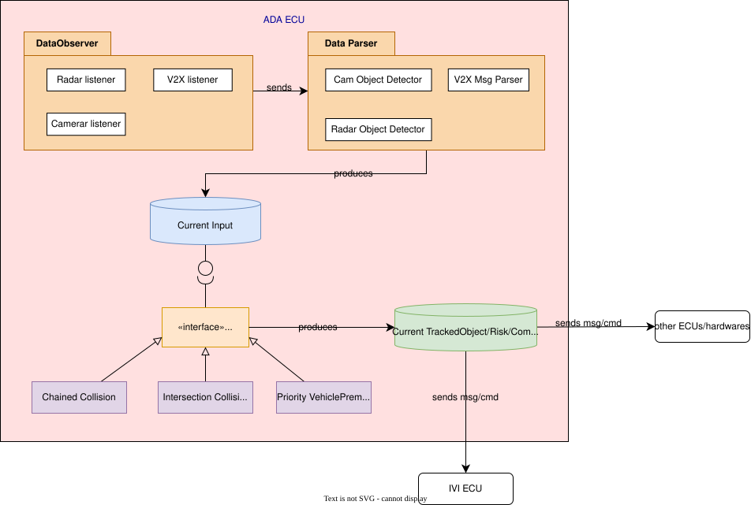
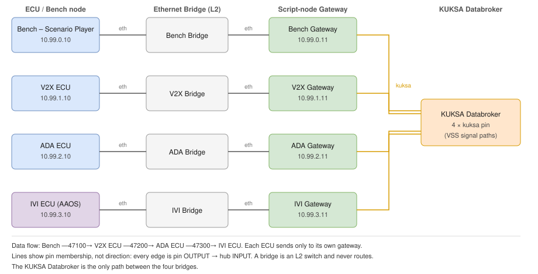
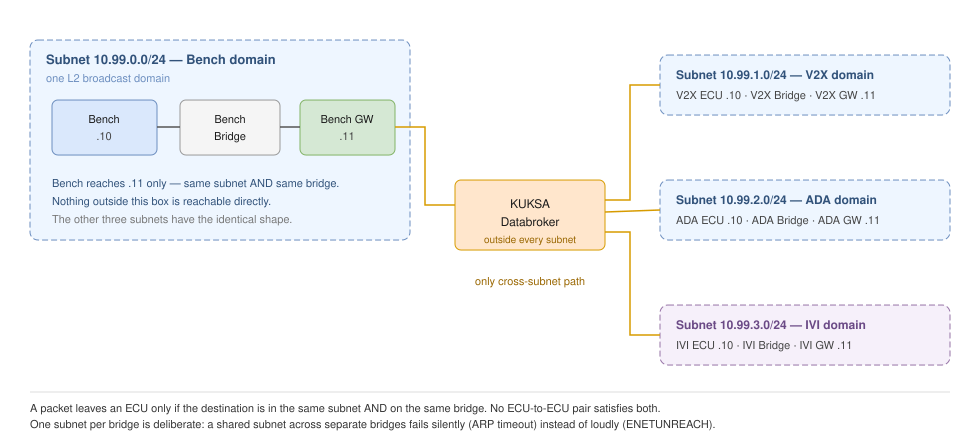

Requirement Analysis & Technical Solution Report — M1: Cooperative Vehicle Awareness¶
Sources of authority: m1-proposal-deck.md — the authoritative proposal; Car-Sky-Platform.html — authoritative on the CarSky development & deployment platform (blueprint/node/pin model).
Requirement numbers R1–R19 are project-global and frozen — they are the
Xsegment of task IDsX.Y.Z.W(task-planning-conventions.md).Extension requirements live in their own reports and continue the same numbering. m1-run-timing-and-event-triggering.md §7 defines R20 (real-time paced stimulus sources), R21 (run alignment and cross-source temporal correlation) and R22 (demo run choreography — warning onset after the eighth second), together with the run-timing solution analysis they rest on.
1. Project description¶
Project goals¶
The system makes a vehicle aware of a hazard it cannot see by relaying another vehicle's perception.
Milestone 1 development goals¶
Milestone 1, developed for the FPT Hackathon, scopes implementation to a single scenario running entirely on a cloud virtual environment:
Three vehicles drive in a collinear convoy — A follows B follows C. Vehicle A's view of C is blocked by B, so A's own camera can never detect C. Vehicle B can see C, detects it, and broadcasts that perception to A over V2X. The result: A displays vehicle C and its relative position, even though A never sees C directly. (M1 builds only A's vehicle; B and C are simulated by the bench.)

Objective — B's perception of C reaches A over a V2X relay. A reconstructs C's position by composing its own measurement of B with B's reported measurement of C: d_AC ≈ d_AB + d_BC (valid for the near-collinear convoy; absolute/GPS composition is a later milestone).
Distance to C is the admission criterion for tracking and for assessing collision risk (track-admission state machine attached at R13). A future milestone should scale the distance criterion with traffic speed (§ Future developments).
System design¶
The 4-ECU design below realizes the goals above; per-ECU M1 scope is in the responsibility list right after it.

ECU and Scenario Player responsibility¶
Responsibility of each ECU and the Scenario Player in Milestone 1; the Cortex-M ECU is listed only to record its exclusion.
- V2X ECU
- Configures the modem and interfaces with it — simulated only.
- Connects to the V2X network — either simulated or handled entirely by a 3rd-party library.
- Receives V2X message payloads, applies business logic, forwards results to the ADA ECU — informing it of an obstruction outside ego's line of sight. This is the whole of the M1 V2X data path: receive-only.
- ~~Receives information from the ADA ECU, constructs V2X message payloads, broadcasts them over the V2X network.~~ — deferred (R10), user decision 2026-07-30.
- ADA ECU
- Incorporates information from the V2X ECU and detected objects from the video feed to construct a warning message for the IVI ECU, via a Collision Risk Assessment abstraction that analyzes and categorizes risk — built so future warning scenarios can be added as extensions without reworking this code (§ Future developments: modular warning scenarios).
- M1 need not classify every risk type or filter by criticality; the warning message is designed so new hazard types and criticality levels can be added later without reworking this design (§ Future developments: criticality filtering, other hazard-warning types).
- Configures the camera and receives live video feeds — neither is implemented (no live camera bring-up is a frozen scope boundary; § Future developments: camera live feed in the IVI Display area).
- Detects objects only from provided saved video files — not a live feed (§ Future developments: live object detection at speed).
- Does not receive GNSS or other sensor data from the Cortex-M ECU.
- IVI ECU
- Displays GUI and applications, and renders information received from the ADA ECU.
- View goals (2D or 3D god view of all vehicles) — M1 delivers the 2D drawing; 3D is optional (R17).
- Multi-process applications are optional in M1: the warning view may be a separate app woken on an ADA message (R16).
- Scenario Player
- Emulates the Quectel modem's connection point toward the V2X ECU.
- Generates V2X messages informing the V2X ECU of vehicle C (R11).
- Cortex-M ECU
- Not developed — sensor data is omitted.
Baseline Propose Topology¶
The committed network layout for the nodes above. It realizes R5 and R6 as frozen: four role nodes, one Ethernet Bridge, one subnet.

Source: baseline-topology-single-bridge.drawio
| Node | Address | Sends to | Port |
|---|---|---|---|
| Bench — Scenario Player | 10.99.0.10 |
V2X ECU | 47100 |
| V2X ECU | 10.99.0.11 |
ADA ECU | 47200 |
| ADA ECU | 10.99.0.12 |
IVI ECU | 47300 |
| IVI ECU | 10.99.0.13 |
— | terminal |
- Each node declares exactly one
ethernetpin, wired to the single bridge — a star, not a chain. - Every hop is same-subnet and same-bridge, so each ECU addresses the next one directly. No routing, gateway, or broker.
- Open item: the IVI Skycraft node needs its
imageartifact reference before the Room can reach 5/5 Running. - An explored alternative that segments the network per ECU is recorded in §5.
Cloud development constraints¶
Development runs entirely on the CarSky cloud platform, under its blueprint/node/pin model (Car-Sky-Platform.html):
- Blueprint: a JSON topology of nodes, pins, and edges plus artifact references — 1 blueprint = 1 car; this project builds one blueprint containing the three ego ECU nodes, the bench node, and the network bridge node.
- Node: 1 node = 1 ECU. V2X ECU, ADA ECU, and the bench Scenario Player run as Container Nodes (team-built OCI images); the IVI runs as the provided Skycraft AAOS node. The bench node is conceptually test equipment outside the car, deployed in the same blueprint so it shares the Room network (R5).
- Pin & edge: a node communicates only through declared pins; wiring two compatible pins with an edge creates the channel. All ECUs use
ethernetpins into one Ethernet Bridge node (R6). - Room: deploying the blueprint creates a Room (Kubernetes namespace, one pod per node) — the working and demo environment; teardown/redeploy leaves the blueprint intact (R5).
The table below covers the ECUs and the Scenario Player — node roles are described in § ECU and Scenario Player responsibility. Per node it states the virtualization level, the scope of development within it, and the goals to achieve.
| Node name | Virtualization level | Focus goals |
|---|---|---|
| IVI ECU | Full vECU — developed fully; the container itself ships in the starter pack | God view of the 3 vehicles with every instance displayed — 2D drawing delivered, 3D optional; switching to another app |
| V2X ECU | App-level (Linux container) — developed in part: only certain layers | Portability to different hardware — the developed layers move across hardware unchanged |
| ADA ECU | App-level (Linux container) — developed fully | Structured, high-performance architecture receiving and sending inputs: condensed messages, low bandwidth, low latency; object detection / AI deep learning is not an M1 focus |
| Bench node — Scenario Player | Container — team-built, developed fully | V2X message generation across different scenarios (§ ECU and Scenario Player responsibility) |
Input constraints¶
- V2X control messages and V2X data (broadcast messages) are inputs to the V2X ECU and carry inter-vehicle communication. M1 develops only the extracting half — "a broadcast was received, check what it is." Constructing application-layer data ("there is an obstruction ahead of me, broadcast it") is deferred with R10.
- The V2X protocol stack ships in the modem and stays out of scope for the whole project, not just M1 (this enables the portability goal in § Cloud development constraints).
- The V2X ECU implements modem↔Cortex-A interfacing (boot-up, configuration) at the interface layer (R7) and constructs the control-plane messages sent to the modem stub for the simplified 3GPP call flow (R8).
- Live video is the ADA ECU's eventual input; in M1, video files are provided instead.
- Video format, frame rate, data rate, and capture conditions are not yet known — these should be studied and proposed to FPT-Mentor so a supported input spec can be provided.
- A pre-trained model should be used to detect the obstruction — no training in M1.
- The ADA ECU → IVI ECU data path must be developed.
System demo requirements¶
Candidate demonstration methods, scored 1 (low) – 10 (high) by jury-convincingness (independent of M1 scope). The M1 scope column marks each method committed (M1 baseline), optional (built if time permits), or deferred (future — § Future developments). Invest effort in the committed methods first, then optional ones in score order.
| Method | Demonstrates | Prefer score | M1 scope |
|---|---|---|---|
| 3D drawing on A's IVI HMI | Bird's-eye (god) view of the 3-vehicle convoy, showing occluded vehicle C | 10 | Optional |
| 2D drawing on A's IVI HMI | 2D top-down view of the convoy, showing occluded vehicle C | 8 | Committed |
| Video feed on A's IVI HMI | A's video feed, showing B — the vehicle occluding C | 8 | Deferred |
| Wireshark capture | V2X messages on the wire — confirms V2X data PDUs are correctly sent/received at the V2X ECU's interface | 7 | Committed |
| Logging in ADA ECU — collision-risk event list | Shows the ADA ECU correctly incorporates both V2X information and its own object detection | 7 | Committed |
| Logging in ADA ECU — annotated video export | Risk-level label per dangerous event; corroborates that ADA correctly detects in-range objects from video | 6 | Optional |
Future developments¶
Milestone 1's design is deliberately extensible toward the following features, all out of M1 scope:
- Modular warning scenarios. ADA's warning-scenario logic is a self-contained module; future warning scenarios (intersection hazards, curve blind spots) plug in as new realizations of a shared Collision Risk Assessment abstraction.
- Priority-vehicle preemption warning. Drawn as a future realization in ada-ecu.svg (user decision 2026-07-12): warn when an emergency/priority vehicle approaches so the driver can yield — plugs in as a new realization of the Collision Risk Assessment abstraction (§ Modular warning scenarios).
- Speed-scaled collision risk assessment. Collision Risk Assessment extends from M1's set distance criterion (§ Milestone 1 development goals) to one that scales with traffic speed.
- Warning on B alone before C is admitted. ADA warns on the visible occluder B on its own while C's relayed range (R2
object.distance) is outside R13's admission threshold, and extends the same warning to the B-and-C scene once C is admitted and tracked. The inputs already exist in M1 — the bench and the Rx pipeline deliver B→C range on every message regardless of admission (R11, R9), R13 owns the admission decision, R14 assesses over the store, and R15 emits on risk transition. What this has to resolve is the R4 message set:geometry.vehicleCis already nullable, butobjectis required and defined as the R3 snapshot of the triggering track (C), so a warning event describing B alone is not representable today; the message that does carry a B-only scene is the periodic awareness state (R15), optional and deferred in M1. It therefore returns as an R4 contract change plus an R15 emission change, not a redesign. - Camera live feed in the IVI Display area. The Display area (R16) renders live camera frames. Live video also feeds ADA's obstruction algorithm.
- Live object detection at speed. B travels up to 120 km/h (33.3 m/s) and must detect obstructions within stopping + broadcast distance: detect a car at ≥ 130–150 m dry / ≥ 190 m wet (braking + reaction + broadcast margin; ≥ 100/160 m with automated braking). Detection range, not frame rate, is the binding constraint — reliable detection at that range needs ≥ 1280–1920 px inference at ≥ 10 Hz, beyond CPU capacity, so this requires GPU-class acceleration.
- Ego video clip display on the IVI. The provided ego-POV clip (B occluding the view ahead) plays in the Display area (R16) — §1's demo-table "video feed" method. Deferred from M1 for time; the Display area already hosts video feeds by design, so this is an added surface, not a rework.
- 2D ⇄ 3D view switching. A user-facing toggle between the 2D and the optional 3D God view (R17) — a future extension behind R17's view seam.
- Multi-process wake-on-warning. A dedicated sleeping app wakes and draws the scene on an ADA event; M1's optional multi-process path (R16) is its foundation.
- Custom appearance / themes. Vehicle's avatar could be customized.
- Fast-UI + C2X benchmark criteria. Extremely fast UI behavior alongside C2X services — e.g. a foreground media app plus 2D/3D display or notification of vehicle C / V2X message arrival; benchmark thresholds are negotiable against technical feasibility.
- Multiple hidden obstructions detection. ADA detects and tracks multiple objects outside line of sight simultaneously (M1 is single-object only).
- Single-message aggregation. Multiple detected obstructions collapse into one V2X message — no broadcast storm.
- User-opt message reduction. The user can opt for fewer V2X messages.
- Criticality filtering. The user can opt to receive only warnings at or above a chosen criticality level; criticality is looked up from the ADA→IVI message's
warningTypefield (R4), not carried as its own value. - Other hazard-warning types. Slippery roads, falling rocks, road holes, road condition, presence of children, police, speed limits, no-horn/other road rules, traffic conditions. Carried by DENM (event position + cause code), the named message family for these types.
- Extensible V2X message-type dispatch. The Rx pipeline (R9) dispatches on message type, so further families enter as a new codec module plus one dispatch entry. Deferred from M1 for time — M1 decodes CPM only (R1).
- Ego Tx: broadcast own perception (R10). The V2X ECU constructs CPMs from the ADA store snapshot and broadcasts them via the adapter
send, so ego can relay what it perceives onward to a following vehicle. Deferred from M1 (user decision 2026-07-30): M1's V2X data path is receive-only — the ego is the warned vehicle A, never the relaying vehicle B, and B is simulated by the bench (R11). The R7 adapter seam already declaressend, so this returns as an implementation behind an existing seam, not a redesign. - Commands to other ECUs. The ada-ecu.svg output stage sends Current TrackedObject/Risk/Commands to other ECUs/hardware (user decision 2026-07-12); M1 implements no ADA→V2X output at all (the R10 store snapshot is deferred above) — command/actuation output to further ECUs is a future path.
{kind=link}
2. Enumerated requirements¶
Ordering: contracts first (R1–R6), then data-flow order — V2X ECU (R7–R10, R10 deferred), bench (R11), ADA (R12–R15), IVI (R16–R17), evidence & end-to-end (R18–R19).
Contracts¶
R1 — V2X message contract: ETSI CPM (TS 103 324), single message type. (analysed)
- Definition: the Collective Perception Message (CPM) informs other vehicles of vehicle C — one message carries B's own pose together with its perceived objects. CPM is the only V2X message type in M1 (selection rationale: §3(a)).
- Note: DENM carries an event position + cause code; it is the named message family for future hazard types (§ Future developments).
- Information required in the message:
| Information | Description |
|---|---|
| Station ID | unique identifier of the sending vehicle (B) |
| Reference time | message generation timestamp |
| Sender reference position | B's WGS84 position (lat/lon) with confidence |
| Sender heading & speed | B's motion state |
| Perceived object ID | B-assigned track ID of the perceived object (C) |
| Time of measurement | offset of C's measurement relative to the reference time |
| Object relative position | C's position relative to B (longitudinal/lateral distance) with confidence |
| Object velocity | C's velocity relative to B |
| Object classification | object class (vehicle) with confidence |
- Call flow: B detects C → B encodes a CPM (this profile) → B broadcasts on the V2X network → A's V2X ECU receives → decode/validate (R9) → C's data forwarded to A's ADA ECU (R2).
- Dependency: none — ETSI forge ASN.1 is public.
- Acceptance: message structure defined in a versioned profile document (fields, units, encoding); the V2X exchange call flow between vehicles defined; a CPM sent and received between connected nodes in the working CarSky environment (bench ↔ V2X ECU).
- Tech stack: Vanetza ITS2 ASN.1 codecs (ETSI release-2 CPM, ASN.1 UPER wire encoding; LGPLv3) behind one codec seam shared by every encoder/decoder.
R2 — V2X ECU → ADA ECU message (JSON over UDP). (analysed)
- Definition: after decoding and validating a received CPM, the V2X ECU constructs one JSON message per perceived-object update and sends it to the ADA ECU:
{
"schemaVersion": 1,
"type": "v2x_object",
"stationId": 1201,
"rxTime": 1789000000123,
"sender": { "lat": 21.028511, "lon": 105.804817, "heading": 90.0, "speed": 16.7 },
"object": {
"objectId": 7,
"timeOfMeasurement": -50,
"distance": 25.4,
"position": { "x": 25.0, "y": 1.2, "confidence": 0.9 },
"speed": 15.2,
"classification": "vehicle",
"confidence": 0.95
}
}
| Field | Description |
|---|---|
| schemaVersion | contract version, for additive evolution |
| type | message discriminator (v2x_object) |
| stationId | sender (B) station ID from the CPM |
| rxTime | receive timestamp at the V2X ECU [ms epoch] |
| sender | B's decoded pose: WGS84 lat/lon, heading [°], speed [m/s] |
| object.objectId | B-assigned ID of the perceived object (C) |
| object.timeOfMeasurement | measurement offset vs the CPM reference time [ms] |
| object.distance | B→C range [m] — the input to R13 track admission |
| object.position | C relative to B: x longitudinal / y lateral [m], with confidence |
| object.speed | C's speed [m/s] |
| object.classification, object.confidence | object class + confidence |
- Dependency: R1.
- Acceptance: schema committed; sample messages validate against it; live V2X ECU → ADA traffic observed on connected nodes carrying decoded bench-scenario values.
- Tech stack: nlohmann/json (C++, MIT).
R3 — Ego object/track contract (TrackedObject). (analysed)
- Definition: one language-neutral schema for every object the ego system handles — shared by the ADA store, the video detector output, and V2X-relayed entries — so perception sources are interchangeable behind one interface.
| Field | Description |
|---|---|
| id | unique track ID in the ego store |
| class | object class (vehicle) |
| source | own_sensor | v2x_relayed |
| position | object position in the ego frame: x longitudinal / y lateral [m] |
| distance | range from ego [m] |
| speed | object speed [m/s] |
| confidence | detection/track confidence 0–1 |
| state | not_tracked | tentative | tracked (per the R13 state machine) |
| timestamps | measured / received / last-updated |
- Dependency: R1 (relayed entries map losslessly from the CPM profile).
- Acceptance: single schema file committed (JSON Schema + per-language bindings); round-trip tests in each consumer language; ADA consumes detector objects (R12) and relayed objects (R9) through the identical schema.
- Tech stack: JSON Schema; nlohmann/json (C++), Python stdlib
json, kotlinx.serialization (Kotlin).
R4 — ADA → IVI warning message. (analysed)
- Definition: versioned JSON message set the ADA ECU sends to the IVI ECU over UDP: edge-triggered warning events (committed) plus a periodic awareness state of the three vehicle poses (optional in M1 — R15); extensible by the
warningTyperegistry (criticality lookup per § Future developments). The warning event carries the full scene geometry, so the IVI renders the view without the state stream.
Warning event:
| Field | Description |
|---|---|
| schemaVersion | contract version |
| type | warning |
| warningType | string from the warning registry (M1: nlos_obstruction) |
| riskState | risk level produced by the R14 assessment |
| object | R3 snapshot of the triggering track (C) |
| geometry | composed scene: ego, B, C relative positions |
Awareness state (optional — R15):
| Field | Description |
|---|---|
| schemaVersion | contract version |
| type | state |
| seq | sequence number, last-value-wins |
| vehicles | poses of ego, B, C in the ego frame (C absent until relayed) |
- Dependency: R3; producer R15; consumers R16/R17.
- Acceptance: schema committed; round-trip tests both ends; a consumer parsing a newer message with an unknown
warningTypedegrades gracefully (additive-version test). - Tech stack: nlohmann/json (ADA side); kotlinx.serialization (IVI side).
R5 — ECU deployment onto CarSky nodes. (analysed)
- Definition: every ECU runs as one node of one CarSky blueprint; deploying the blueprint creates the Room that is the working environment. Deployability was verified against the platform doc — all four ECUs map onto existing node types:
| ECU | CarSky node type | What must be done |
|---|---|---|
| V2X ECU | Container Node | build a Linux OCI image (C++ app), push to the platform registry (Zot), reference it in the blueprint |
| ADA ECU | Container Node | build a Linux OCI image (C++ core + Python detector), push, reference |
| IVI ECU | Skycraft Node (AAOS guest) | use the provided AAOS artifact (image + host-package roles); install the team APK via the node's ADB access |
| Bench — Scenario Player | Container Node | team-built image, deployed in the same blueprint as bench equipment |
- General steps: build & push the container images → author the blueprint in Nydus (nodes, pins, edges, artifact references) → New Deployment → verify all nodes Running in the Deployment Viewer → teardown/redeploy as needed.
- Dependency: platform access; starter pack (AAOS artifact).
- Acceptance: the blueprint containing the four nodes (+ the R6 bridge) deploys to a Room; the Deployment Viewer reports every node Running; the team APK launches on the AAOS node.
- Tech stack: Docker/OCI image builds; CarSky registry (Zot); Nydus blueprint editor.
R6 — Inter-ECU network: Ethernet Bridge + ethernet pins. (analysed)
- Definition: one Ethernet Bridge node forms the Room's virtual L2 network; every ECU node declares an
ethernetpin wired to the bridge (pins connect like-to-like only); the bridge subnet auto-assigns container IPs and pins the Skycraft guest to its declared address. All inter-ECU traffic — V2X wire messages (R1), V2X→ADA (R2), ADA→IVI (R4) — is UDP over this network; no additional middleware. - Dependency: R5.
- Acceptance: blueprint wiring matches the communication topology (bench ↔ V2X ECU, V2X ECU → ADA, ADA → IVI); UDP reachability demonstrated between every communicating pair in the deployed Room; traffic captured on the bridge network.
- Tech stack: CarSky Ethernet Bridge node; POSIX UDP sockets.
V2X ECU (app-level Linux container)¶
R7 — Radio adapter seam (hardware portability). (analysed)
- Definition: the V2X application touches the radio only via a thin adapter —
init · configure · subscribeRx · send— mirroring the production telux API surface; below the seam, the hackathon implementation is UDP over the R6 network toward the bench. The application layer above the seam ports to real modem hardware unchanged — the node's focus goal. - Dependency: R1, R6.
- Acceptance: the application layer has no direct transport imports above the seam (CI import check); telux parity notes and a written port plan committed, enumerating exactly which functions change on real hardware.
- Tech stack: — (telux is the mirrored reference API, not a linked dependency).
R8 — Modem stub: configuration call flow. (analysed)
- Definition: in-node stub with the state machine
idle → initialized → configured → rx-subscribed, acking the application's init/configure/subscribe sequence (simplified 3GPP-flavored call flow); config-driven fault injection (init failure, configure reject, subscription drop) exercises the application's error handling. - Dependency: R7.
- Acceptance: the full scripted call flow acked and logged; each injected fault produces a defined, logged recovery.
- Tech stack: —.
R9 — Rx pipeline: decode → validate → dedupe → forward. (analysed)
- Definition: adapter datagram → CPM decode (R1) → semantic validation (mandatory fields, ranges) → dedupe (stationId + objectId + measurement time) → construct the R2 message → send to the ADA ECU. Malformed or unknown input is rejected and counted, never crashes the node.
- Dependency: R1, R2, R7.
- Acceptance: golden-vector CPMs decode correctly; a malformed-input corpus is fully rejected and logged with zero crashes; R2 messages observed at the ADA ECU.
- Tech stack: Vanetza ITS2 codec; nlohmann/json.
R10 — Ego Tx: broadcast own perception. (analysed — DEFERRED to a future milestone, user decision 2026-07-30)
Not implemented in M1. In M1 the V2X ECU is receive-only on the V2X side: it decodes relayed CPMs and forwards R2 messages to the ADA ECU informing it of an obstruction outside ego's line of sight. It constructs and broadcasts nothing. Requirement number R10 is retained (numbers are never reused) but carries no M1 deliverable, no acceptance check, and no task decomposition — mirrored in § Future developments and the future-features register. Ego's Tx path returns when ego must relay its own perception onward to a following vehicle — a multi-ego scenario M1 does not build.
- Definition: the V2X ECU constructs CPMs (R1 profile) from ADA store data (R3 snapshot of ego's own-sensor objects) and broadcasts them via the adapter
send. - Dependency: R1, R7, R13.
- Acceptance: (void for M1) broadcast frames captured on the R6 network with fields populated from live store data, not constants.
- Tech stack: Vanetza ITS2 codec.
Bench node — Scenario Player¶
R11 — V2X message generation (vehicle C awareness). (analysed)
- Definition: the bench node generates multiple V2X messages (R1 profile) that inform the V2X ECU of vehicle C — its distance and other relevant info (relative position, speed, classification, sender B's pose) — across configurable scenarios and message rates.
- Dependency: R1, R6.
- Acceptance: generated messages are received and decoded by the V2X ECU on connected nodes; different scenario configurations produce different message streams (e.g. C approaching vs C out of range).
- Tech stack: Python; the shared R1 codec (Vanetza-based encoder).
ADA ECU (app-level Linux container)¶
R12 — Object detection from video files. (analysed)
- Definition: ADA detects objects from the provided video files (no live camera), estimates their distance, and emits R3 TrackedObject entries with
source = own_sensorinto the R13 store — ego's own perception source (it detects B, the visible occluder; C is by definition not in ego's frame). - Dependency: R3; provided video clip.
- Acceptance: detection log over the provided clip with per-frame objects and distance estimates; detector entries enter the store through the same R3 interface as relayed entries; zero detections labeled C.
- Tech stack: YOLO11n (Ultralytics, AGPL-3.0) exported to ONNX on ONNX Runtime CPU; OpenCV video decode; Python detector subprocess streaming R3 JSONL over stdout (no FFI, no RPC).
R13 — Track store + admission state machine. (analysed)
- Definition: R3-shaped track store with per-source admission. Vehicle C is tracked based on a set hardcoded distance: C is admitted to tracking when its reported distance (R2
object.distance) is within the set threshold (30 m) and dropped when it leaves the threshold or its messages stop; own-sensor objects follownot_tracked → tentative → tracked. Full lifecycle per the state machine:

- Dependency: R2, R3; inputs R9, R12.
- Acceptance: state transitions observable in logs and matching the diagram; C's track carries
source = v2x_relayedonly. - Tech stack: — (C++17 core, standard library).
R14 — Collision Risk Assessment abstraction. (analysed)
- Definition: a coding architecture that allows plugging in future risk assessments: risk logic sits behind a common interface consuming the track store and emitting typed warnings (R4 registry). M1's occluded-vehicle (NLOS) risk is the first plugin; §1's future scenarios (intersection hazards, curve blind spots, speed-scaled risk, priority-vehicle preemption) register as new plugins without reworking existing code. Design:

- Dependency: R3, R4, R13.
- Acceptance: the code — the abstraction interface plus the M1 NLOS plugin registered through it — and the database schema the assessment reads and writes.
- Tech stack: C++17.
R15 — Warning output to the IVI ECU. (analysed)
- Definition: the ADA ECU produces output messages to the IVI ECU (structure per R4, over UDP on the R6 network):
- Warning event (committed): on each R14 risk transition, ADA sends a warning event carrying the risk state and the composed scene (ego, B, ghost C). One warning event carries enough geometry for the IVI to draw the scene.
- Periodic awareness state (optional): a continuous state stream of the three vehicle poses for smooth view updates between warnings; deferred if time-constrained — the warning event alone triggers and renders the M1 demo.
- Dependency: R4, R6, R14.
- Acceptance: demo-captured traffic from ADA to IVI — a pcap/tcpdump on the R6 network showing at least one R4 warning event during a scenario run, which triggers the IVI warning view. The periodic awareness state, if built, appears in the same capture.
- Tech stack: nlohmann/json.
IVI ECU (provided AAOS full vECU)¶
R16 — HMI on the AAOS node. (analysed)
- Definition:
- The HMI display design resembles the image below: areas for functional buttons/apps around one central Display area.
- The warning view — the God view of the vehicles, a 2D drawing with 3D optional (R17) — is shown in the Display area, which also serves video feeds and application windows.
- Multi-process (optional): the warning view may be displayed by a separate app woken up when the IVI ECU receives a message from the ADA ECU (R4); a single-app warning view satisfies M1.

- Dependency: R4, R5 (AAOS node).
- Acceptance: the HMI runs on the AAOS node with the layout above; an R4 warning brings the warning view up in the Display area; the button/app areas switch what the Display area shows. Optional paths, if built: an ADA message wakes the separate warning app; the 3D drawing renders through R17's view seam.
- Tech stack: Kotlin, Jetpack Compose, AndroidX.
R17 — Warning view: God view of the 3 vehicles. (analysed)
- Definition: implement the warning view — a God view of the 3 vehicles (ego, B, and ghost C rendered from
v2x_relayeddata), drawn from R4 messages only. The 2D drawing is the M1 deliverable; the 3D drawing is optional, both behind one view seam. - Visual target: the screen reads like a Tesla-style driving visualisation — a dark canvas and a lane-marked road carrying the three vehicles as car-shaped silhouettes in one lane, ego nearest the viewer. The camera is slightly inclined rather than strictly overhead, so vehicles show a shallow rear face and the road converges toward the top. Ego and B are drawn solid; ghost C is a dashed, translucent reconstruction standing on a pulsing ground glow coloured by the current R14 risk state (low / medium / high) — that glow and the dashed outline are what distinguish a relayed vehicle from a directly sensed one. Nothing else is drawn: no legend, no distance labels, no text overlay, no banner — the scene alone is the warning. The image below fixes that visual language and the elements to draw, not pixel geometry, fonts, or exact placement.

-
Annotated variant — the same scene with the vehicles, the A→B and A→C distances, a
[V2X]provenance badge and the zone B occludes called out. An explanatory figure for describing the demo; not what the IVI renders: ivi-god-view-warning-screen.svg. -
Dependency: R4, R16.
- Acceptance: the warning view shows the 3 vehicles with ghost C sourced only from
v2x_relayeddata; the 2D drawing is delivered. The optional 3D drawing, if built, renders the same scene through the view seam. - Tech stack: Compose Canvas (2D); SceneView/Filament (3D, optional).
{kind=link}
Evidence & end-to-end demo¶
R18 — Evidence logging. (analysed)
- Definition: structured JSONL event logs on the V2X ECU and ADA (message rx/tx, decode results, track transitions, risk events) forming the collision-risk event list of §1's demo table.
- Dependency: R9, R13, R14.
- Acceptance: the event list reconstructs a full demo run offline; every §1 demo-evidence method that cites logs is producible from them.
- Tech stack: — (JSONL, standard logging).
R19 — End-to-end demo run (definition of done). (analysed)
- Definition: one continuous recorded run of the full live chain — bench → V2X ECU → ADA → IVI — with no scripted shortcuts inside ego software: ego's own detections contain zero C entries for the whole run while the IVI warns and renders ghost C from
v2x_relayeddata only. - Dependency: all committed requirements above.
- Acceptance: the recorded run; Wireshark/pcap of the V2X exchange (R1) and of the ADA→IVI traffic (R15) corroborating the chain; zero-C check on the R12 detection log; ghost-C source check on the IVI (R17).
- Tech stack: Wireshark/tcpdump.
3. Technical solution analysis¶
Hard-constraint screening precedes every comparison (open-source only, Linux-targeted per solution-selection-criteria.md); C1–C4 below are that rule's ranked criteria. The provided AAOS node and CarSky itself are sanctioned competition infrastructure, not team dependency choices.
(a) V2X message family + encoding — serves R1, R9–R11¶
- Family candidates: SAE J2735 BSM — disqualified (paywalled spec, and Part I carries no perceived objects); ETSI CAM+DENM; ETSI CPM TS 103 324.
- Single-type check: CAM describes only the sender — cannot carry C; DENM is event notification (position + cause code) without perceived-object kinematics; CPM carries B's reference position and the perceived object with position/velocity/classification/confidence in one message. One message type (CPM) covers the full M1 exchange; CAM adds nothing needed, DENM stays the named family for future hazard types (§1 Future developments).
- Pick: CPM TS 103 324 — drivers C1 (Vanetza ships release-2 CPM codecs) and C2 (one message, one codec, one profile).
- Encoding candidates: asn1tools — disqualified (no X.681/X.683 support needed by CPM); raw asn1c — redundant (Vanetza embeds maintained asn1c output); pycrate — no precompiled CPM; Vanetza ITS2 ASN.1 targets (LGPLv3, usable without the GN/BTP stack).
- Pick: Vanetza ITS2 as the single codec source behind one codec seam — drivers C1 (one proven codec, golden vectors cannot drift) and C4 (asn1-only build targets, no full-stack pull-in).
(b) Radio transport under the adapter seam — serves R7, R8¶
- Candidates: thin team adapter over UDP; telux porting into the container; generic middleware (ZeroMQ/MQTT) under the seam.
- Middleware screened out on fidelity (inserts semantics production doesn't have — production Rx is already "read from socket"); the telux port is declined for M1 but kept mechanical via the R7 parity notes + port plan.
- Pick: thin adapter + modem stub with call-flow FSM and fault injection — drivers C2 (least work that still proves the seam) and C3 (the port plan keeps the real-hardware swap open).
(c) Bench message generation — serves R11¶
- Candidates: self-written Python generator; MetaDrive; CARLA (GPU-heavy); SUMO (no perception concept).
- Pick: self-written Python generator driving the shared R1 codec — drivers C1 (deterministic, no engine unknowns), C2 (smallest build), C4 (zero engine dependency).
(d) Languages per track — serves all¶
- V2X ECU: C++17. Portability is the node's focus goal and telux is a C++ API — C++ keeps "developed layers move across hardware unchanged" code-true; Vanetza is C++, so the codec stays in-process.
- ADA ECU: C++17 core + Python detector subprocess. The core (store, CRA, emission, logging) is C++17; the R12 detector is Python, joined only by the process-level contract (argv + exit codes + R3 JSONL over stdout) — no FFI, no cross-language API.
- Bench: Python. Fastest to iterate scenario content; reuses the R1 codec for encoding.
- IVI: Kotlin (§3(e)).
- Cross-language drift is contained by the versioned contracts (R1–R4) with round-trip tests.
(e) IVI HMI framework on AAOS — serves R16, R17¶
- Candidates: Kotlin + Jetpack Compose (+ SceneView/Filament 3D); Flutter-on-Android; web-in-browser (fails the no-JS/WebSocket decision for ego software); Qt-for-Android (JNI/cross-compile friction, no AAOS idiom gain).
- Pick: Kotlin + Compose; 3D via SceneView; 2D via Compose Canvas behind the view seam — drivers C1 (native toolchain of the provided node; app switching/notifications first-class), C2 (no extra engine layer), C3 (the seam carries the future camera-feed view and themes).
(f) ADA→IVI data path — serves R4, R15, R16¶
- Candidates: UDP + versioned JSON into an Android foreground service; TCP stream; gRPC (codegen + streaming surface unneeded); MQTT (broker infrastructure unneeded); WebSocket (banned in the ego software path); AAOS VHAL property injection (platform-support unverified).
- Pick: UDP + versioned JSON — warning events edge-triggered (committed); the optional periodic state stream last-value-wins with sequence numbers; drivers C1, C2, C4.
(g) Perception stack — serves R12¶
- Candidates: YOLO11n ONNX-CPU (AGPL-3.0); YOLOX-s (Apache-2.0); SSD-MobileNet (weaker accuracy).
- Pick: YOLO11n on ONNX Runtime, CPU-only — driver C1 (best accuracy among CPU-feasible options); no GPU requested from BTC.
Stack summary (per track)¶
| Track / node | Language | Key components |
|---|---|---|
| V2X ECU (Container Node) | C++17 | radio adapter seam (R7) + modem stub (R8) + Vanetza CPM decoder + Rx pipeline (R9) — receive-only; ~~ego Tx (R10)~~ deferred |
| ADA ECU (Container Node) | C++17 core + Python 3.11 detector | track store (R13) + CRA abstraction/plugins (R14) + R4 emission (R15) + evidence logs (R18); YOLO11n ONNX-CPU detector (R12) behind the R3 JSONL subprocess boundary |
| IVI (provided AAOS Skycraft node) | Kotlin | Compose HMI (R16; multi-process optional) + Canvas 2D / SceneView 3D (optional) behind the view seam (R17) + UDP ingest service |
| Bench (Container Node) | Python | scenario-configurable CPM generation (R11) via the shared R1 codec |
| Contracts / CI | JSON Schema + ETSI ASN.1 | R1 profile, R2, R3, R4 schemas; golden vectors; round-trip tests |
| Platform | — | one blueprint: 4 ECU/bench nodes + Ethernet Bridge, ethernet pins, Zot registry (R5, R6) |
4. Decision record¶
Standing user decisions governing §2 and §3:
- CPM is the single M1 V2X message family; DENM is the named family for future hazard types.
- R10 (ego Tx) is deferred to a future milestone (2026-07-30). The M1 V2X ECU is receive-only: it decodes relayed CPMs and forwards R2 messages to the ADA ECU about an obstruction outside line of sight, and constructs/broadcasts nothing. R10 keeps its number but has no M1 deliverable, acceptance check, or task breakdown (§ Future developments).
- Extensible message-type dispatch in the Rx pipeline is deferred from M1 for schedule reasons (§1 Future developments).
- IVI framework is Kotlin/Compose + SceneView on the provided AAOS node; Flutter-on-Android was evaluated and not selected.
- No JavaScript and no WebSocket in the ego software path (V2X ECU, ADA ECU, IVI app).
- Licensing accepted under open-source-only: Vanetza LGPLv3 (dynamic linking), YOLO11n AGPL-3.0.
- Single-ego blueprint — the multi-real-car variant is declined.
- The IVI multi-process front end is optional in M1: if built, the warning view is a separate app woken on an ADA message (R16).
- The R17 warning view delivers the 2D God view; the 3D drawing is optional, not a committed M1 deliverable.
- Ego video clip display on the IVI is deferred from M1 for schedule reasons (§1 Future developments).
- No GPU requested from BTC — CPU-only perception, display-only video.
- telux porting is declined for M1; the R7 parity notes + port plan keep the hardware swap mechanical.
- The Cortex-M ECU and its mock node are omitted; ego own-sensor objects come from R12.
- The IVI renders relative geometry only — no map and no GNSS injection on the IVI node.
- The single-Ethernet-Bridge topology is adopted (§1 Baseline Propose Topology): all four nodes on one bridge in one subnet — no multi-bridge segmentation and no KUKSA databroker (§5 records the rejected alternative).
5. Suggested alternative network topology¶
Alternative to the committed layout in §1 Baseline Propose Topology, which stays the design of record.
Session context only. Not ratified. R6 (§2 Contracts) stays frozen: one Ethernet Bridge, every ECU wired to it.
- Blueprint: propose-blueprint-4EthBridges-4SubDomains-KUKSADatabroker-3ECU-1Bench.json — platform export of
trial1_minh, 2026-07-30. - Shape: 4
eth-bridge+ 4script-nodegateways + 1kuksa-databroker. 13 nodes, 12 edges. - For more details on KUKSA, see kuksa-node-communication.md — what the broker is, node roles, the gateway pattern, and the KIS reference topology.
Node, bridge, gateway¶

Source: propose-topology-node-bridge-gateway.drawio
- Each ECU owns one
ethernetpin into its own bridge. - Each bridge carries one gateway as its second member.
- Each gateway owns one
kuksapin into the shared databroker. - Every edge is pin
OUTPUT→ hubINPUT. Two hubs cannot be wired together.
Subnets¶

Source: propose-topology-subnets.drawio
| Bridge | Subnet | ECU | Gateway |
|---|---|---|---|
| Bench Bridge | 10.99.0.0/24 |
Bench .10 |
Bench GW .11 |
| V2X Bridge | 10.99.1.0/24 |
V2X ECU .10 |
V2X GW .11 |
| ADA Bridge | 10.99.2.0/24 |
ADA ECU .10 |
ADA GW .11 |
| IVI Bridge | 10.99.3.0/24 |
IVI ECU .10 |
IVI GW .11 |
- A bridge is an L2 switch. It never routes between subnets.
- A packet leaves an ECU only if the target is in the same subnet and on the same bridge.
- No ECU-to-ECU pair meets both. Only the databroker crosses subnets.
- So each ECU targets its own gateway, never the far ECU: bench→
10.99.0.11:47100, V2X→10.99.1.11:47200, ADA→10.99.2.11:47300. Ports unchanged from §1. - One subnet per bridge is deliberate. A shared subnet across separate bridges fails silently (ARP timeout) instead of loudly (
ENETUNREACH).
Open items¶
- Four gateways need
scriptContent(Luau). An ETHERNET pin is a bare NIC (e-<pinname>), so each relay terminates UDP itself vianydus.net.udp()— §4.3–4.4. - Databroker needs the custom VSS artifact for the three signal paths — §3.
- Each bridge needs
{"ethBridge": {"bridgeMode": "linux", "subnet": "10.99.N.0/24", "port": 29400}}. The Skycraft guest is DHCP-bound to its declared pin address, so a default10.99.0.0/24scope cannot serve IVI's10.99.3.10. - IVI Skycraft node carries no
imageartifact reference.
Benefits¶
- Domain isolation. Each ECU sits on its own L2 segment. Broadcast traffic and a misbehaving node stay inside one bridge.
- Realistic E/E shape. Domain controllers behind their own switches, joined by a central signal broker — the same architecture as the platform's reference blueprint blueprint-KIS.json.
- Signal-level observability. KUKSA pins unlock
POST /api/v1/signals/{roomId}/{nodeKey}/values, whichethernet-only nodes cannot use (carsky-rest-api-blueprint.md). Relayed values become readable from the API instead of only from a packet capture — useful for R18 evidence. - Transport seam. The ECUs keep speaking plain UDP; the gateway absorbs the transport. Changing transport later is a Lua edit, not an ECU code change.
- Extensibility. A new consumer (cluster, telematics, logger) attaches as another gateway on the broker — no change to the existing ECUs or to R1–R4.
Trade-offs against 1 bridge topology¶
- 6 hops per flow instead of 1, four Lua relays, one VSS artifact (UI-upload only), plus an requirement R6 re-freeze — for payloads that need no schema translation.
- Only the KUKSA half is scriptable.
ETHERNETpins are still absent from theaddPinenum, so all bridge wiring stays manual in the Nydus UI.